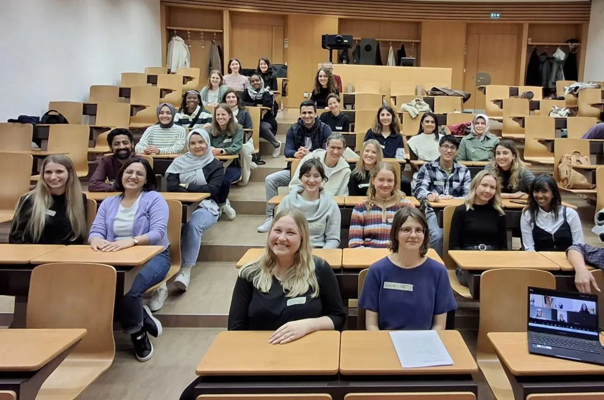

SEET-Reflexionsworkshop – der 6-Monate-Meilenstein
SEET Reflection workshop marks six-month milestone
SEET-Reflexionsworkshop – der 6-Monate-Meilenstein
Am Abend des 18. Oktobers trafen sich die Mentees und Mentor:innen unseres diesjährigen Programms an der ETH Zürich für unseren Reflexions-Workshop, bei dem ein bedeutender Meilenstein des diesjährigen Programms gefeiert wurde.

Jedes Jahr unterstützt SEET eine Gruppe von Frauen – und dieses Jahr zum ersten Mal auch Männer – beim Zugang zu Bildung mit einem professionellem Mentoring, Networking-Events, Karriere-Workshops und finanzieller Unterstützung.
Im Jahr 2024 wurden 32 Mentees des Mentoring-Programms – eine Steigerung von 78 % gegenüber 2023 – einer:m Mentor:in zugeteilt, der ihnen hilft, sich in den komplexen Wegen des Schweizer Bildungssystems zurechtzufinden.
Unglaublich, aber wahr: Die aktuelle Gruppe von Teilnehmenden hat bereits die Hälfte des Programms hinter sich, und im Raum war eine spürbare positive Energie zu spüren, als alle Mentoring-Paare zusammenkamen und sich über ihre Erfahrungen der ersten sechs Monate ihrer gemeinsamen Beziehung austauschten.
Nach 45 Minuten Diskussion zwischen Mentee-Mentor-Paaren versammelten sich alle im Auditorium und wurden aufgefordert, ihre Highlights sowie konstruktives Feedback darüber zu teilen, wie das SEET-Team das Programm weiterentwickeln kann.
Julia Ahlberg von SEET, die die Veranstaltung moderierte, erläuterte die Bedingungen für Mentees, ihre Teilnahme um weitere zwölf Monate zu verlängern, abhängig von ihrem aktuellen Bildungsstatus. Mentees und Mentoren wurde auch die Möglichkeit geboten, ihre Beziehung gemeinsam zu verlängern, wenn beide einverstanden waren. Eine Nachricht, die insbesondere von den Mentees sehr positiv aufgenommen wurde.
Bevor sich die Teilnehmer bei einem Apéro im labyrinthartigen Keller der ETH zum weiteren Erfahrungsaustausch trafen, wurden die Mentees eingeladen, an einer interaktiven Feedbackrunde teilzunehmen.
Eine der gestellten Fragen war: Was hat dich überrascht und was hat dich zum Nachdenken gebracht? Eine Antwort, die zurückkam, bestätigte perfekt das Ziel des SEET-Teams, sicherzustellen, dass alle Mentees bei ihrer erfolgreichen Integration in die Schweizer Gesellschaft unterstützt werden. Der Mentee schrieb einfach als Antwort: „Wie gut man eine Verbindung zu jemandem aufbauen kann, der (mir) blind zugeteilt wurde.“
Wir möchten uns bei allen bedanken, die dabei waren und wertvolle Beiträge und Feedback geliefert haben – einige sind sogar mehr als zwei Stunden mit dem Zug angereist. Ein grosses Dankeschön auch an die ETH und an alle hinter den Kulissen, die zu einem herzlichen, höchst produktiven Abend beigetragen haben.
Der Jahrgang 2024-25 wird gegen Ende Februar 2025 abgeschlossen sein. Wenn du daran interessiert bist, in Zukunft Mentor:in zu werden, SEET als Partner unterstützen möchtest oder mehr über die Aktivitäten von SEET erfahren möchtest, melde dich bitte für unseren Newsletter an und folge uns auf LinkedIn, Instagram und Facebook.
On the evening of Friday 18 October, ETH Zürich was the location for SEET’s ‘Reflections’ workshop, as a significant milestone in this year’s program was celebrated.
Each year, SEET supports a group of women – and for the first time this year, men too – to access educational courses, alongside professional mentoring, networking events, career workshops and finances.
In 2024, 32 participants in the mentoring program – a 78% increase on 2023 – have been matched with a mentor to help them navigate the complex Swiss education system pathways.
Incredibly, the current cohort of participants have already reached the halfway stage of the program, and there was a palpable sense of positive energy in the room as they came together to share their experiences and to reflect on the first six months of their relationships together.
After a healthy 45 minutes of discussions between mentee-mentor couples, the auditorium saw everyone regroup and invited to share their highlights, as well as constructive feedback on how the SEET team can continue to evolve the program.
SEET’s Julia Ahlberg who moderated the event, outlined the conditions for mentees extending their participation for an additional twelve months, dependent on their current education status. Mentees and mentors were also offered the opportunity to prolong their relationship together, should they both agree. News that was greeted very positively by the mentees in particular.
Before the participants gathered to exchange experiences further over an Apero in the ETH’s labyrinth-like basement, the mentees were invited to participate in an interactive feedback round.
One of the questions posed was: What has surprised you, and what has made you think? One answer that came back perfectly endorsed the SEET team’s objective to ensure all mentees are supported in their successful integration into Swiss society. The mentee simply wrote in response: “How well one can connect to someone who was matched (to me) blindly.”
We’d like to thank everyone who joined us, providing invaluable inputs and feedback, some of whom travelled more than two hours by train. A big thank you also to the ETH, and the people behind the scenes, who contributed to a warm-spirited, highly productive evening.
The 2024-25 program cycle is due to conclude towards the end of February 2025. If you are interested in becoming a mentor in the future, are interested in supporting SEET as a partner,or would like to learn more about SEET’s activities, please sign up for our newsletter and follow us on LinkedIn, Instagram and Facebook.
Cet article n’est disponible qu’en allemand.
Am Abend des 18. Oktobers trafen sich die Mentees und Mentor:innen unseres diesjährigen Programms an der ETH Zürich für unseren Reflexions-Workshop, bei dem ein bedeutender Meilenstein des diesjährigen Programms gefeiert wurde.
Jedes Jahr unterstützt SEET eine Gruppe von Frauen – und dieses Jahr zum ersten Mal auch Männer – beim Zugang zu Bildung mit einem professionellem Mentoring, Networking-Events, Karriere-Workshops und finanzieller Unterstützung.
Im Jahr 2024 wurden 32 Mentees des Mentoring-Programms – eine Steigerung von 78 % gegenüber 2023 – einer:m Mentor:in zugeteilt, der ihnen hilft, sich in den komplexen Wegen des Schweizer Bildungssystems zurechtzufinden.
Unglaublich, aber wahr: Die aktuelle Gruppe von Teilnehmenden hat bereits die Hälfte des Programms hinter sich, und im Raum war eine spürbare positive Energie zu spüren, als alle Mentoring-Paare zusammenkamen und sich über ihre Erfahrungen der ersten sechs Monate ihrer gemeinsamen Beziehung austauschten.
Nach 45 Minuten Diskussion zwischen Mentee-Mentor-Paaren versammelten sich alle im Auditorium und wurden aufgefordert, ihre Highlights sowie konstruktives Feedback darüber zu teilen, wie das SEET-Team das Programm weiterentwickeln kann.
Julia Ahlberg von SEET, die die Veranstaltung moderierte, erläuterte die Bedingungen für Mentees, ihre Teilnahme um weitere zwölf Monate zu verlängern, abhängig von ihrem aktuellen Bildungsstatus. Mentees und Mentoren wurde auch die Möglichkeit geboten, ihre Beziehung gemeinsam zu verlängern, wenn beide einverstanden waren. Eine Nachricht, die insbesondere von den Mentees sehr positiv aufgenommen wurde.
Bevor sich die Teilnehmer bei einem Apéro im labyrinthartigen Keller der ETH zum weiteren Erfahrungsaustausch trafen, wurden die Mentees eingeladen, an einer interaktiven Feedbackrunde teilzunehmen.
Eine der gestellten Fragen war: Was hat dich überrascht und was hat dich zum Nachdenken gebracht? Eine Antwort, die zurückkam, bestätigte perfekt das Ziel des SEET-Teams, sicherzustellen, dass alle Mentees bei ihrer erfolgreichen Integration in die Schweizer Gesellschaft unterstützt werden. Der Mentee schrieb einfach als Antwort: „Wie gut man eine Verbindung zu jemandem aufbauen kann, der (mir) blind zugeteilt wurde.“
Wir möchten uns bei allen bedanken, die dabei waren und wertvolle Beiträge und Feedback geliefert haben – einige sind sogar mehr als zwei Stunden mit dem Zug angereist. Ein grosses Dankeschön auch an die ETH und an alle hinter den Kulissen, die zu einem herzlichen, höchst produktiven Abend beigetragen haben.
Der Jahrgang 2024-25 wird gegen Ende Februar 2025 abgeschlossen sein. Wenn du daran interessiert bist, in Zukunft Mentor:in zu werden, SEET als Partner unterstützen möchtest oder mehr über die Aktivitäten von SEET erfahren möchtest, melde dich bitte für unseren Newsletter an und folge uns auf LinkedIn, Instagram und Facebook.